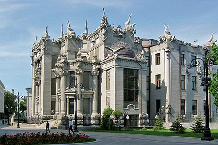
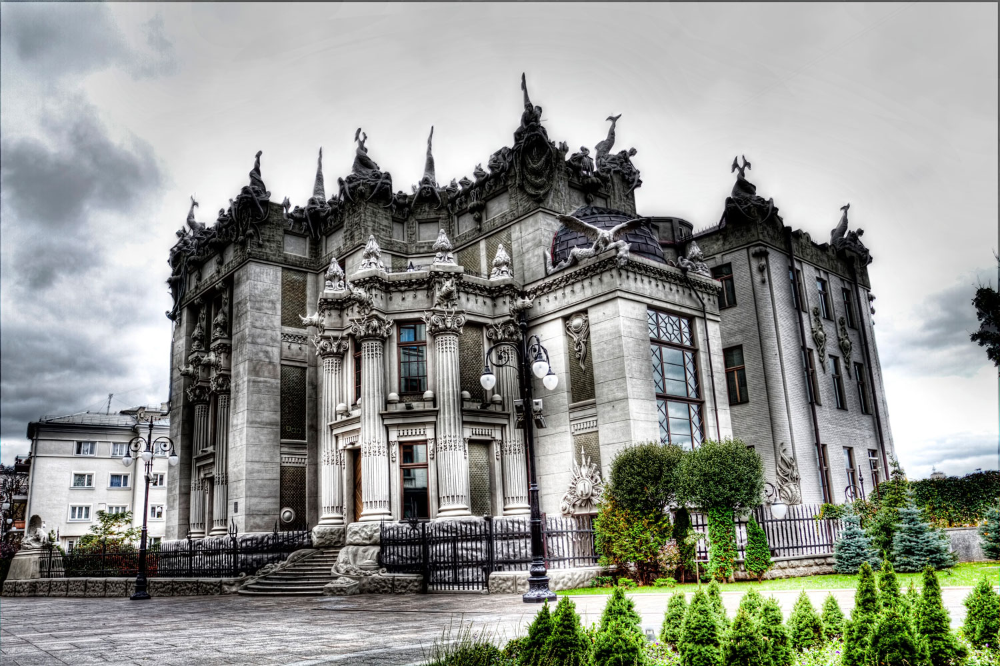
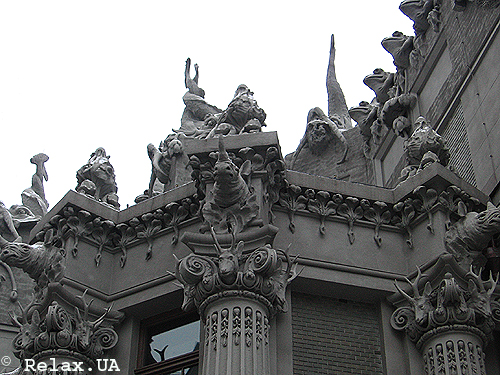

Дом с химерами (укр. Будинок з химерами) — кирпичное здание в стиле модерн, расположенное в столице Украины, Киеве. Своё название дом получил благодаря скульптурным украшениям (расположенным как на фасаде дома так и внутри его), тематика которых — наземный и подводный животный мир, атрибуты охоты, сказочные существа.
Здание расположено в Печерском районе на улице Банковой, 10, напротив Администрации Президента Украины. Архитектор Владислав Городецкий построил его в 1901—1903 годах как доходный дом с помещениями для своей семьи. Место строительства выбрал над крутым обрывом по Банковой улице, на бывшем берегу осушенного Козьего болота. Скульптурные украшения по собственным эскизам выполнил скульптор Элио Саля.
Дом используется в качестве резиденции Президента Украины с весны 2005 года согласно постановлению правительства. Является памятником архитектуры № 906.
Строительство дома Городецкого, фото 1902 года
Дом с химерами был построен по проекту архитектора Владислава Городецкого в 1901—1902 годах[2] с применением инновационных решений для тех времен под руководством инженера Антона Страуса. Ко времени строительства здания Городецкий был известен как крупный архитектор, разработал многие здания Киева — в частности, Костёл святого Николая, Киевскую кенассу и Национальный художественный музей Украины. Помимо архитектуры, Городецкий любил охоту, возможно, поэтому в его работах присутствует так много скульптурных изображений животных.
Городецкий финансировал строительство дома на заёмные средства с намерением создать доходный дом. На каждом этаже он сформировал по одной квартире, они были связаны между собой лифтом и лестницами. Сам Городецкий занимал четвёртый этаж здания, площадь которого составляет около 380 м².
Первую часть земли Городецкий купил 1 февраля 1901 года, строительные работы начались 18 марта того же года. Строительство наружных стен было завершено 21 августа, крыша и кирпичная кладка была завершена 13 сентября. В связи с экономическими трудностями в Российской империи завершение строительства было отложено. В мае 1903 года были заняты только одна квартира на нижнем этаже и собственная квартира Городецкого. Для строительства здания было использовано 1550 м² земли стоимостью 15 640 рублей[3]. Общая стоимость земли и строительства составила 133 000 рублей. Предполагаемый годовой доход от аренды составлял 7200 рублей. Слева от центрального фасада располагалась альпийская горка (площадью около 320 м²) с фонтаном.
Из-за финансовых проблем, связанных с увлечением сафари, в июле 1912 года Городецкий решил заложить свой особняк Киевскому обществу взаимных кредитов.
Оригинальный план одного из этажей здания, выполненный Городецким в начале 1900-х
В свободной планировке дома использован принцип функциональной взаимосвязи изолированных групп помещений (парадных, жилых, хозяйственных), что характерно для богатых домов начала ХХ в. Расположение комнат в доме — веером, по ходу солнца, что создавало условия для хорошего естественного освещения. Общая площадь здания составляет 3 309,5 м².
На первом этаже со стороны площади Ивана Франка размещались две конюшни, две комнаты для кучеров, общая прачечная и две квартиры — двух- и трёхкомнатная. Каждая из двух квартир состоит из прихожей, кухни, ванной комнаты и кладовой. На этажах, расположенных выше первого, располагалось по одной квартире.
На втором этаже квартира состояла из шести жилых комнат, вестибюля, кухни, буфета, трёх комнат для прислуги, одной ванной комнаты, двух туалетов и двух кладовых.
На третьем и шестом этаже располагались квартиры из восьми жилых комнат, в них имелись прихожая, кухня, прачечная, две комнаты для прислуги, ванная комната и два туалета. Квартира на третьем этаже располагалась несколько ниже уровня главного входа со стороны Банковской улицы.
Лучшая квартира, с тринадцатью комнатами, на четвёртом этаже со стороны площади Ивана Франко (на первом со стороны Банковой улицы), принадлежала самому Городецкому. Она состояла из кабинета, гостиной, малой гостиной, столовой, будуара, спальни, детской, комнаты для гувернантки, запасной комнаты, прихожей, трёх комнат для прислуги, посудомоечной, коридора, кухни, ванной, двух туалетов и двух кладовых. Такая же квартира находилась этажом выше.
Помимо квартир, конюшни, прачечной и кладовых, в доме были винные погреба и коровник, Городецкий хотел каждый день поить своих жильцов свежим молоком. Расположение коровника было подобрано таким образом, чтобы запах не доставлял жильцам неудобств.